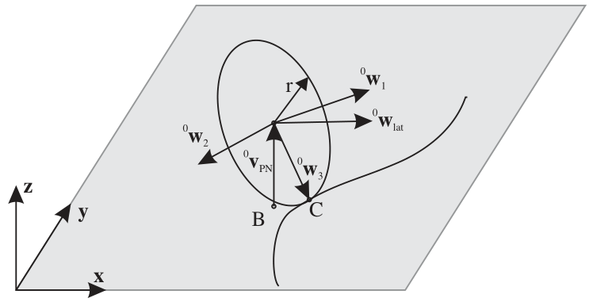

ObjectConnectorRollingDiscPenalty
A (flexible) connector representing a rolling rigid disc (marker 1) on a flat surface (marker 0, ground body, not moving) in global \(x\)-\(y\) plane. The connector is based on a penalty formulation and adds friction and slipping. The contraints works for discs as long as the disc axis and the plane normal vector are not parallel. Parameters may need to be adjusted for better convergence (e.g., dryFrictionProportionalZone). The formulation for the arbitrary disc axis is still under development and needs further testing. Note that the rolling body must have the reference point at the center of the disc.
Additional information for ObjectConnectorRollingDiscPenalty:
- This
Objecthas/provides the following types =Connector - Requested
Markertype =Position+Orientation - Requested
Nodetype =GenericData - Short name for Python =
RollingDiscPenalty - Short name for Python visualization object =
VRollingDiscPenalty
The item ObjectConnectorRollingDiscPenalty with type = ‘ConnectorRollingDiscPenalty’ has the following parameters:
- name [type = String, default = ‘’]:constraints’s unique name
- markerNumbers [\([m0,m1]\tp\), type = ArrayMarkerIndex, size = 2, default = [ invalid [-1], invalid [-1] ]]:list of markers used in connector; \(m0\) represents a point at the plane surface (normal of surface plane defined by planeNormal); the ground can also be a moving rigid body; \(m1\) represents the rolling body, which has its reference point (=local position [0,0,0]) at the disc center point
- nodeNumber [\(n_d\), type = NodeIndex, default = invalid (-1)]:node number of a NodeGenericData (size=3) for 3 dataCoordinates, needed for discontinuous iteration (friction and contact)
- discRadius [type = PReal, default = 0.]:defines the disc radius
- discAxis [\(\LU{m1}{{\mathbf{w}}_{1}}, \;\; |\LU{m1}{{\mathbf{w}}_{1}}| = 1\), type = Vector3D, default = [1,0,0]]:axis of disc defined in marker \(m1\) frame
- planeNormal [\(\LU{m0}{{\mathbf{v}}_{PN}}, \;\; |\LU{m0}{{\mathbf{v}}_{PN}}| = 1\), type = Vector3D, default = [0,0,1]]:normal to the contact / rolling plane (ground); note that the plane reference point can be arbitrarily chosen by the location of the marker \(m0\)
- dryFrictionAngle [\(\alpha_t\), type = Real, default = 0.]:angle [SI:1 (rad)] which defines a rotation of the local tangential coordinates dry friction; this allows to model Mecanum wheels with specified roll angle
- contactStiffness [\(k_c\), type = UReal, default = 0.]:normal contact stiffness [SI:N/m]
- contactDamping [\(d_c\), type = UReal, default = 0.]:normal contact damping [SI:N/(m s)]
- dryFriction [\([\mu_x,\mu_y]\tp\), type = Vector2D, default = [0,0]]:dry friction coefficients [SI:1] in local marker 1 joint \(J1\) coordinates; if \(\alpha_t==0\), lateral direction \(l=x\) and forward direction \(f=y\); assuming a normal force \(f_n\), the local friction force can be computed as \(\LU{J1}{\vp{f_{t,x}}{f_{t,y}}} = \vp{\mu_x f_n}{\mu_y f_n}\)
- dryFrictionProportionalZone [\(v_\mu\), type = Real, default = 0.]:limit velocity [m/s] up to which the friction is proportional to velocity (for regularization / avoid numerical oscillations)
- viscousFriction [\([d_x, d_y]\tp\), type = Vector2D, default = [0,0]]:viscous friction coefficients [SI:1/(m/s)] in local marker 1 joint \(J1\) coordinates; proportional to slipping velocity, leading to increasing slipping friction force for increasing slipping velocity
- rollingFrictionViscous [\(\mu_r\), type = Real, default = 0.]:rolling friction [SI:1], which acts against the velocity of the trail on ground and leads to a force proportional to the contact normal force; currently, only implemented for disc axis parallel to ground!
- useLinearProportionalZone [type = Bool, default = False]:if True, a linear proportional zone is used; the linear zone performs better in implicit time integration as the Jacobian has a constant tangent in the sticking case
- activeConnector [type = Bool, default = True]:flag, which determines, if the connector is active; used to deactivate (temporarily) a connector or constraint
- visualization [type = VObjectConnectorRollingDiscPenalty]:parameters for visualization of item
The item VObjectConnectorRollingDiscPenalty has the following parameters:
- show [type = Bool, default = True]:set true, if item is shown in visualization and false if it is not shown
- discWidth [type = float, default = 0.1]:width of disc for drawing
- color [type = Float4, default = [-1.,-1.,-1.,-1.]]:RGBA connector color; if R==-1, use default color
DESCRIPTION of ObjectConnectorRollingDiscPenalty
The following output variables are available as OutputVariableType in sensors, Get…Output() and other functions:
Position: \(\LU{0}{{\mathbf{p}}}_{G}\)current global position of contact point between rolling disc and groundVelocity: \(\LU{0}{{\mathbf{v}}}_{trail}\)current velocity of the trail (according to motion of the contact point along the trail!) in global coordinates; this is not the velocity of the contact point!VelocityLocal: \(\LU{J1}{{\mathbf{v}}}\)relative slip velocity at contact point in special \(J1\) joint coordinatesForceLocal: \(\LU{J1}{{\mathbf{f}}} = \LU{0}{[f_{t,x},\, f_{t,y},\, f_{n}]\tp}\)contact forces acting on disc, in special \(J1\) joint coordinates, see section Connector Forces, \(f_{t,x}\) being the lateral force (parallel to ground plane), \(f_{t,y}\) being the longitudinal force and \(f_{n}\) being the contact normal forceRotationMatrix: \(\LU{0,J1}{{\mathbf{A}}} = [\LU{0}{{\mathbf{w}}_{lat}},\, \LU{0}{{\mathbf{w}}}_2,\, \LU{0}{{\mathbf{v}}_{PN}}]\)transformation matrix of special joint coordinates \(J1\) to global coordinates
Definition of quantities
intermediate variables
|
symbol
|
description
|
|---|---|---|
marker m0 position
|
\(\LU{0}{{\mathbf{p}}}_{m0}\)
|
current global position which is provided by marker m0, any ground reference point; currently unused
|
marker m0 orientation
|
\(\LU{0,m0}{\Rot}\)
|
current rotation matrix provided by marker m0; currently unused
|
marker m1 position
|
\(\LU{0}{{\mathbf{p}}}_{m1}\)
|
center of disc
|
marker m1 orientation
|
\(\LU{0,m1}{\Rot}\)
|
current rotation matrix provided by marker m1
|
data coordinates
|
\({\mathbf{x}}=[x_0,\,x_1,\,x_2]\tp\)
|
data coordinates for \([x_0,\,x_1]\): hold the sliding velocity in lateral and longitudinal direction of last discontinuous iteration; \(x_2\): represents gap of last discontinuous iteration (in contact normal direction)
|
marker m1 velocity
|
\(\LU{0}{{\mathbf{v}}}_{m1}\)
|
accordingly
|
marker m1 angular velocity
|
\(\LU{0}{\tomega}_{m1}\)
|
current angular velocity vector provided by marker m1
|
ground normal vector
|
\(\LU{0}{{\mathbf{v}}_{PN}} = \LU{0,m0}{{\mathbf{A}}} \LU{m0}{{\mathbf{v}}_{PN}}\)
|
normalized normal vector to the ground body (rotates with marker \(m0\) if not fixed to ground)
|
ground position B
|
\(\LU{0}{{\mathbf{p}}}_{B}\)
|
disc center point projected on ground (normal projection)
|
ground position C
|
\(\LU{0}{{\mathbf{p}}}_{C}\)
|
contact point of disc with ground
|
ground velocity C
|
\(\LU{0}{{\mathbf{v}}}_{C}\)
|
velocity of disc at ground contact point (must be zero at end of iteration)
|
wheel axis vector
|
\(\LU{0}{{\mathbf{w}}_1} =\LU{0,m1}{\Rot} \LU{m1}{{\mathbf{w}}_{1}}\)
|
normalized disc axis vector in global coordinates
|
longitudinal vector
|
\(\LU{0}{{\mathbf{w}}_2}\)
|
vector in longitudinal (motion) direction
|
contact point vector
|
\(\LU{0}{{\mathbf{w}}_3}\)
|
normalized vector from disc center point in direction of contact point C
|
lateral vector
|
\(\LU{0}{{\mathbf{w}}_{lat}} = \LU{0}{{\mathbf{v}}_{PN}} \times \LU{0}{{\mathbf{w}}}_2\)
|
vector in lateral direction, parallel to ground plane
|
\(D1\) transformation matrix
|
\(\LU{0,D1}{{\mathbf{A}}} = [\LU{0}{{\mathbf{w}}_1},\, \LU{0}{{\mathbf{w}}_2},\, \LU{0}{{\mathbf{w}}_3}]\)
|
transformation of special disc coordinates \(D1\) to global coordinates
|
connector forces
|
\(\LU{J1}{{\mathbf{f}}}=[f_{t,x},\,f_{t,y},\,f_n]\tp\)
|
joint force vector at contact point in joint 1 coordinates: x=lateral direction, y=longitudinal direction, z=plane normal (contact normal)
|
Geometric relations
The main geometrical setup is shown in the following figure:
{kind=link}
First, the contact point \(\LU{0}{{\mathbf{p}}}_{C}\) must be computed. With the helper vector,
we create a disc coordinate system \(D1\) (\(\LU{0}{{\mathbf{w}}}_1, \; \LU{0}{{\mathbf{w}}}_2, \; \LU{0}{{\mathbf{w}}}_3\)), with the longitudinal direction,
and the vector to the contact point,
The vector from marker \(m0\) position to the contact point can be computed from
The velocity of the contact point at the disc is computed from,
A second coordinate system, denoted as \(J1\), is defined by vectors (\(\LU{0}{{\mathbf{w}}}_{lat}, \; \LU{0}{{\mathbf{w}}}_2, \; \LU{0}{{\mathbf{v}}}_{PN}\)), using
Note that in the case that the rolling axis \(\LU{0}{{\mathbf{w}}}_1\) lies in the rolling plane, we obtain the special case \(\LU{0}{{\mathbf{w}}}_{lat} = \LU{0}{{\mathbf{w}}}_1\) and \(\LU{0}{{\mathbf{w}}}_3 = -\LU{0}{{\mathbf{v}}}_{PN}\).
Computation of normal and tangential forces
The connector forces at the contact point \(C\) are computed as follows. The normal contact force reads
Note that due to the projection onto \(\LU{0}{{\mathbf{v}}_{PN}}\), this equation also works for inclined planes and reference points, that are not at \([0,0,0]\tp\). The inplane velocity in joint coordinates,
is used for the computation of tangential forces,
with the regularization function, see Geradin and Cardona (Sec.7.9.3), if useLinearProportionalZone=False,
and the linear regularization function, if useLinearProportionalZone=True,
The direction of tangential slip is given as
The friction coefficient matrix \(\LU{J1}{\tmu}\) is given in joint coordinates and computed from
where for isotropic behaviour of surface and wheel, it will give a diagonal matrix with the friction coefficient in the diagonal. In case that the dry friction angle \(\alpha_t\) is not zero, the \(\tmu\) changes to
Connector forces
Finally, the connector forces read in joint coordinates
and in global coordinates, they are computed from
Due to the fact that the marker positions are not collocated with the contact point, there are additional torques that need to be considered in the action on the body. The torque onto the disc (marker \(m1\)) is computed as
The torque onto the ground (marker \(m0\)) is computed as
Note that if activeConnector = False, we replace Eq. (76) with
Relevant Examples and TestModels with weblink:
bicycleIftommBenchmark.py (Examples/), leggedRobot.py (Examples/), mobileMecanumWheelRobotWithLidar.py (Examples/), reinforcementLearningRobot.py (Examples/), carRollingDiscTest.py (TestModels/), laserScannerTest.py (TestModels/), mecanumWheelRollingDiscTest.py (TestModels/), rollingCoinPenaltyTest.py (TestModels/), rollingDiscTangentialForces.py (TestModels/), rotatingTableTest.py (TestModels/)
The web version may not be complete. For details, consider also the Exudyn PDF documentation : theDoc.pdf